[Proj. 01]
EDITORIAL, 2025
Creative Direction & Editorial Design
Mariana Esteves, Bernard Gerber, Pedro Matos
Print Production
Pedro Serra, Mariana Esteves, Bernard Gerber, Pedro Matos
Photography
Frances Rocha
Mentions and Features
LAD Awards 2026 — Student Winner
Featured in Lisbon’s Design Week Young Design Generation ‘26
Context
Developed at the Faculty of Fine Arts, University of Lisbon
A Designer at the End of the Dream Career is a collective risograph publication designed for the Communication Design graduates of the 2024/2025 academic year.
Students were invited to confront the significance of reaching the end of an academic journey. Their contributions were then compiled under a common theme, “The Dream Career”—ultimately, the path we carve out for ourselves.
A unifying visual identity was created to connect all contributions, drawing from diagrams, maps, and charts as a nod to the soul-searching that shapes every designer’s path. Physically, the publication itself is divided into three interwoven chapters, inviting readers to choose their own entry point—mirroring the unpredictable nature of creative careers.
Printed with the faculty’s Risograph machine and fully produced by hand—folded, stapled, and trimmed in the design lab—it was released in a limited run of 100 copies, each with a distinct, tactile quality.
[Proj. 01]
[IMG]
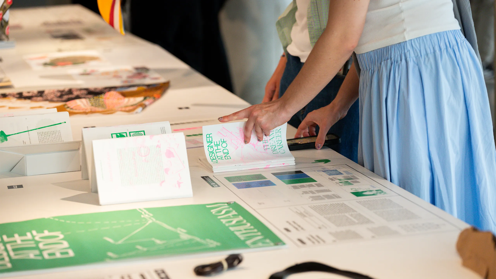
Photo: MUDE Museum
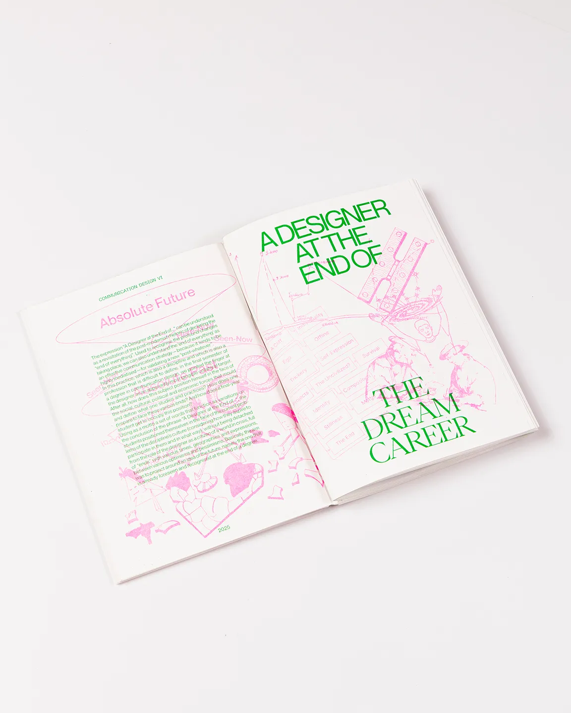
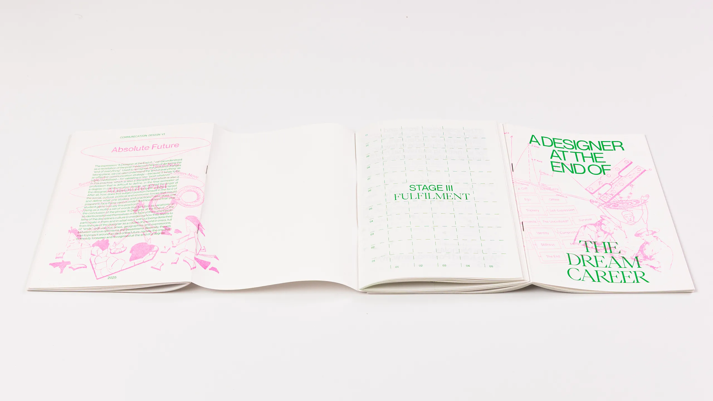
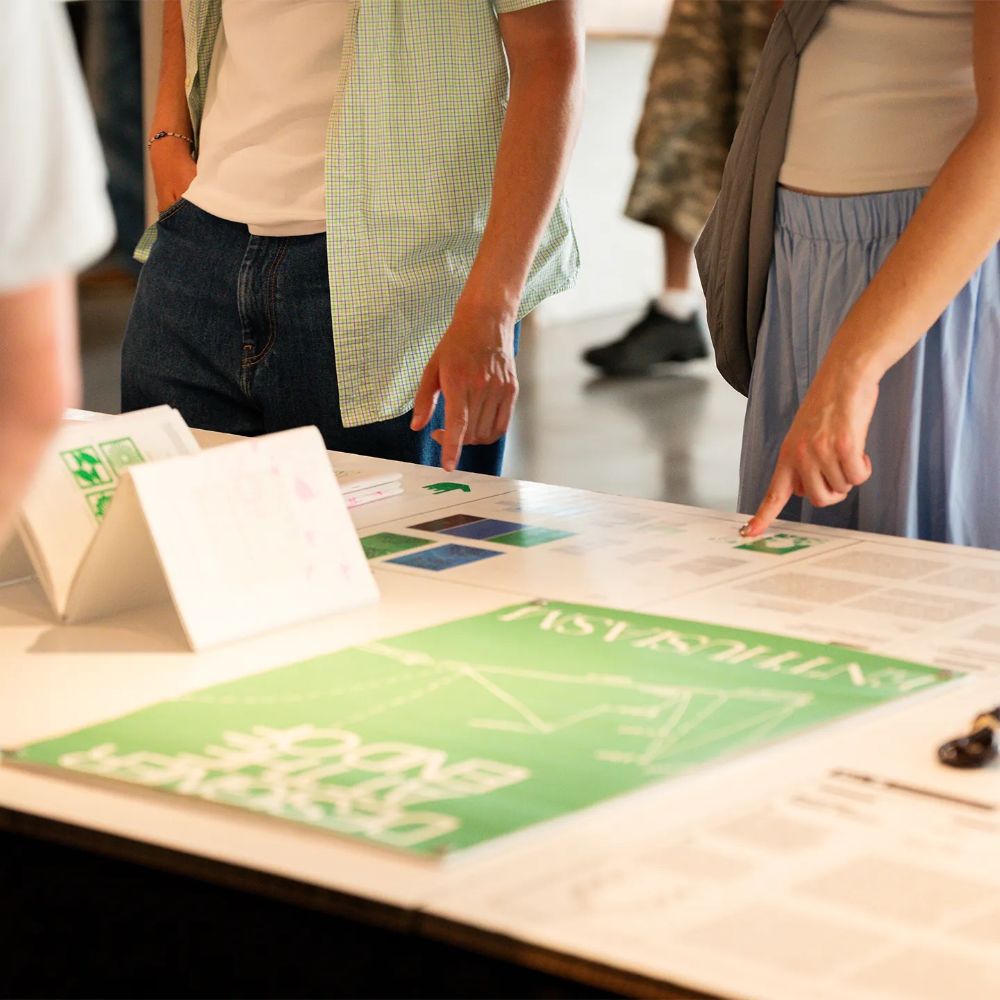
Photo: MUDE Museum
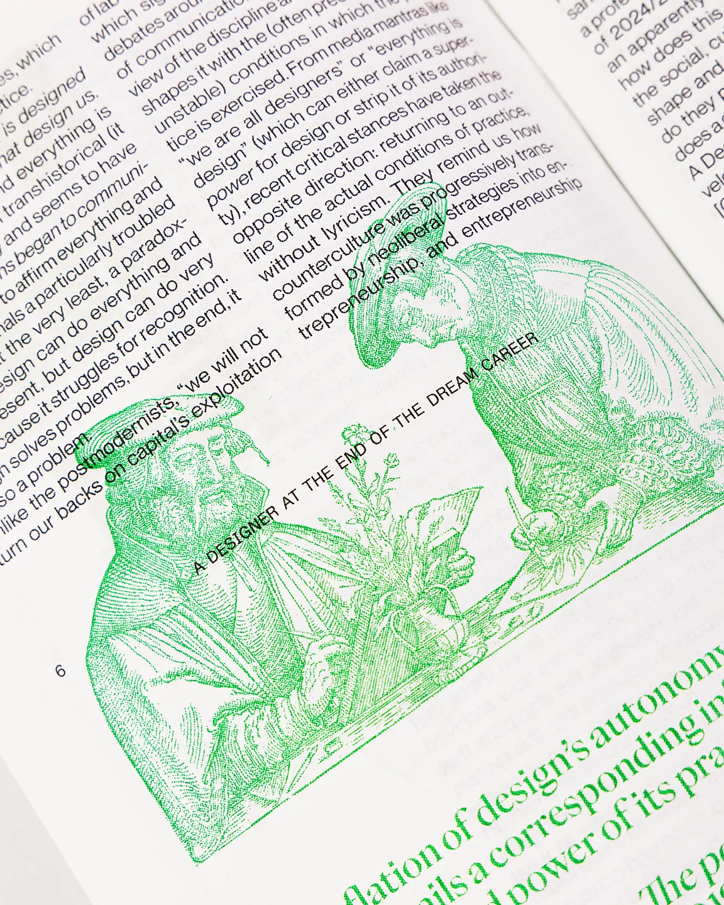
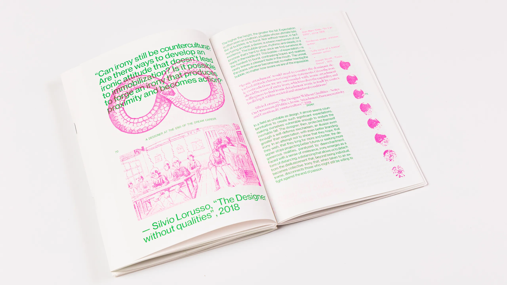
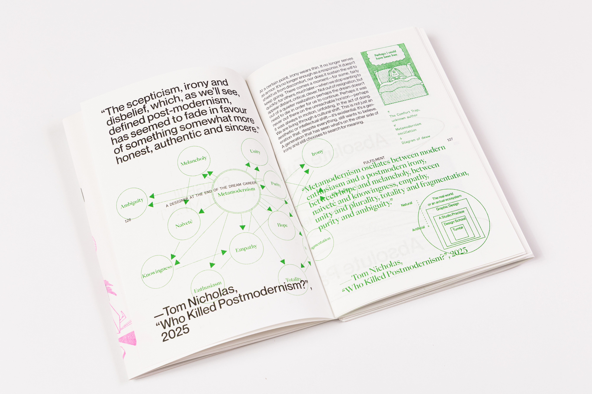
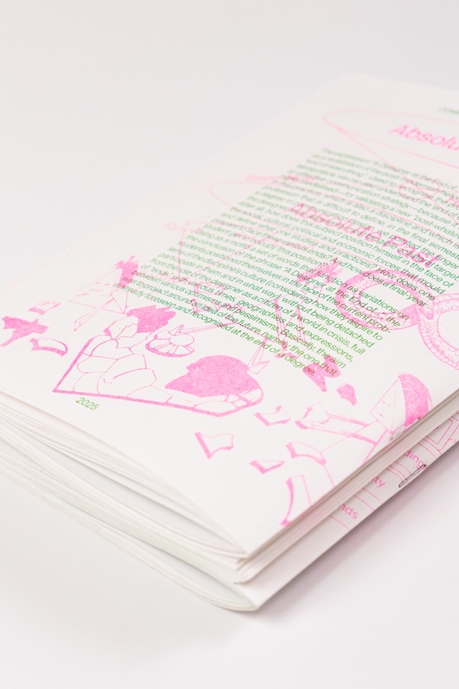
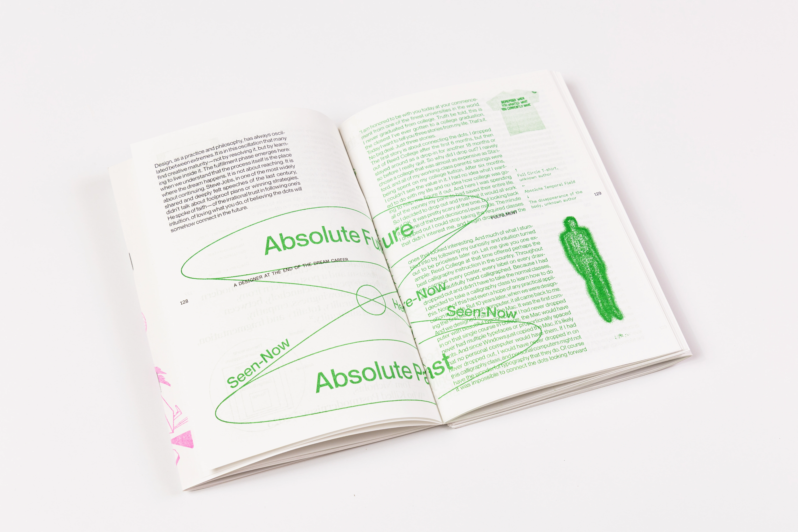
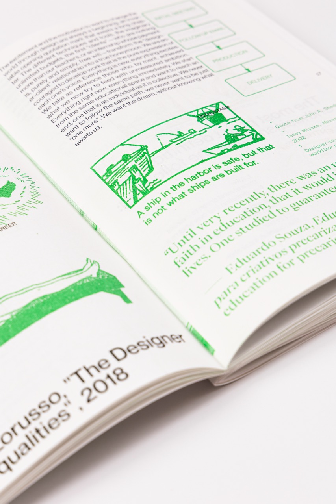
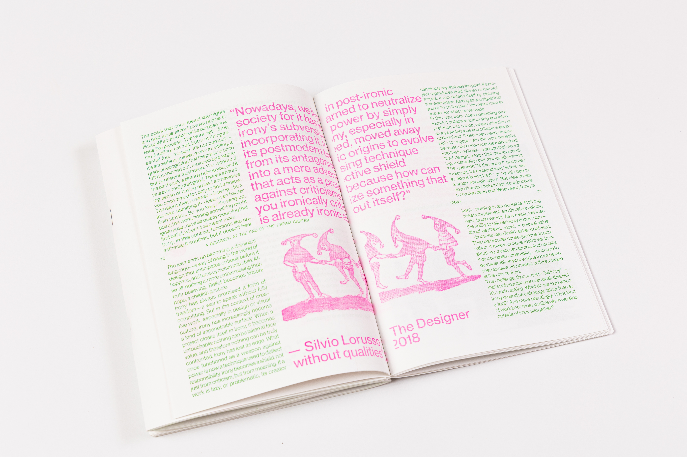
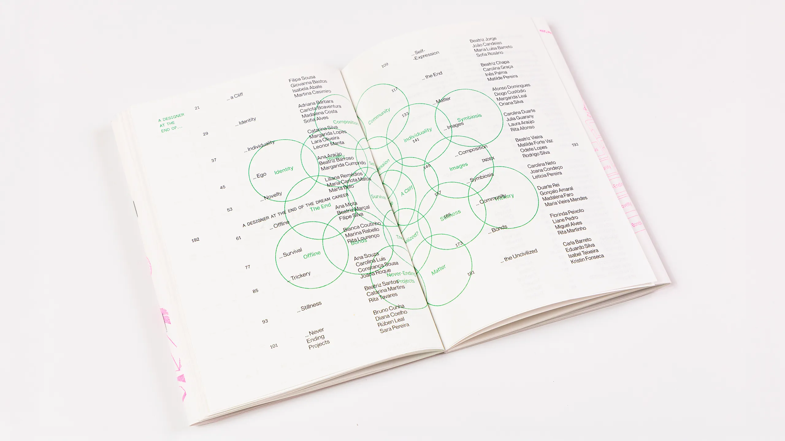
[IMG]